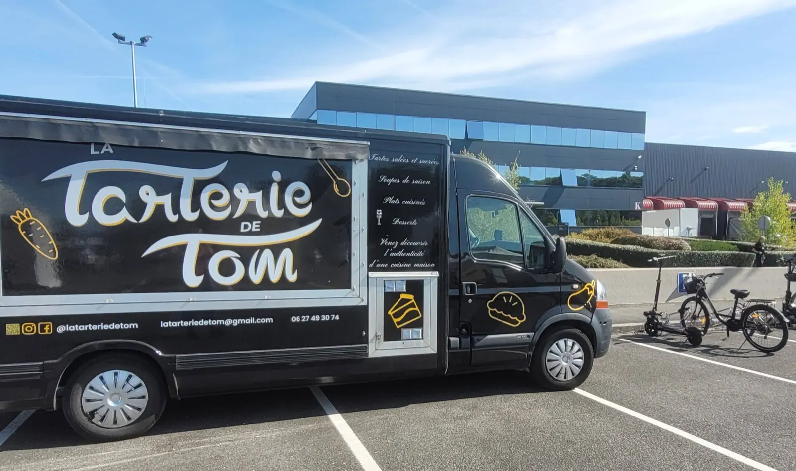
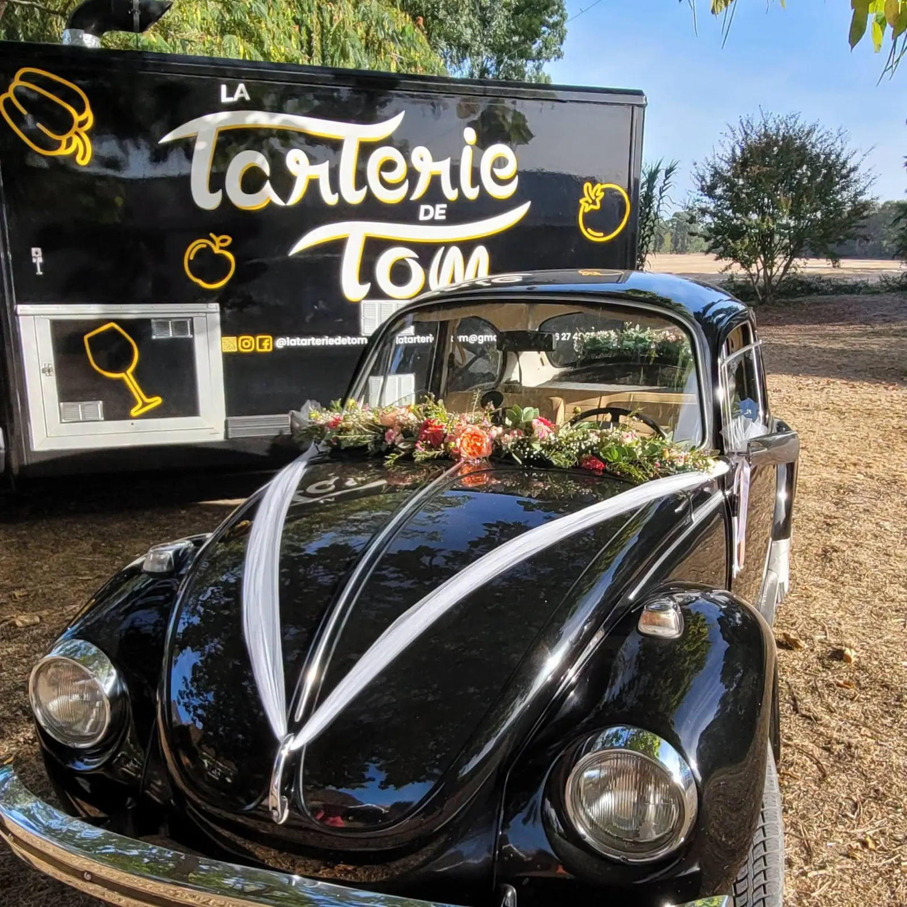
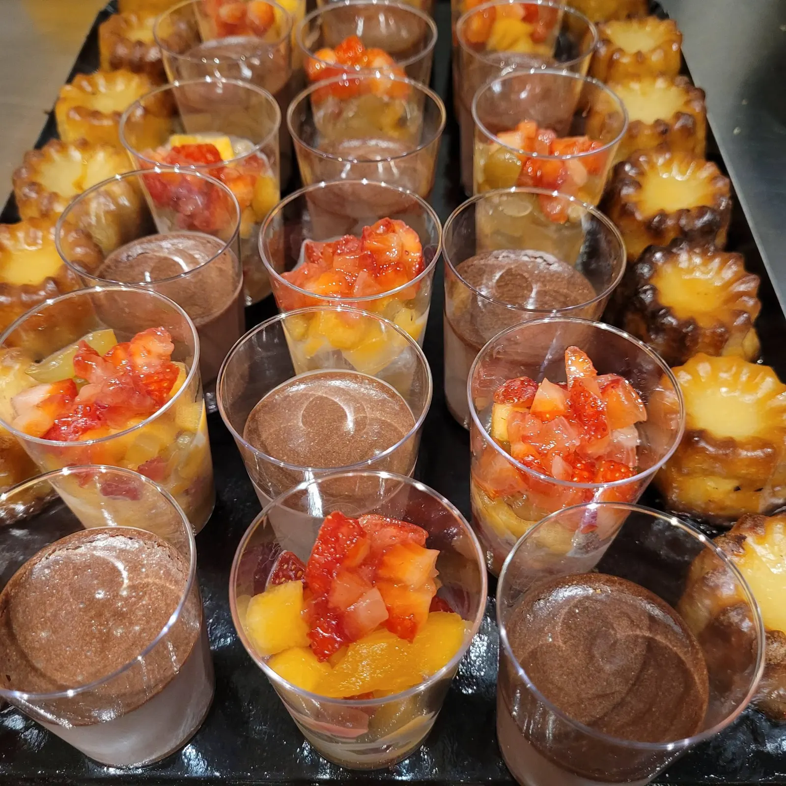
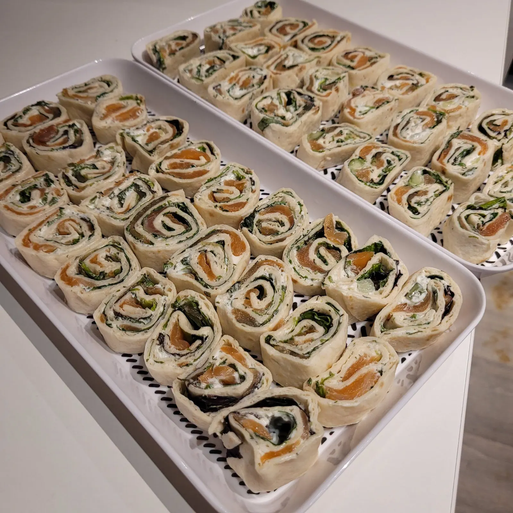
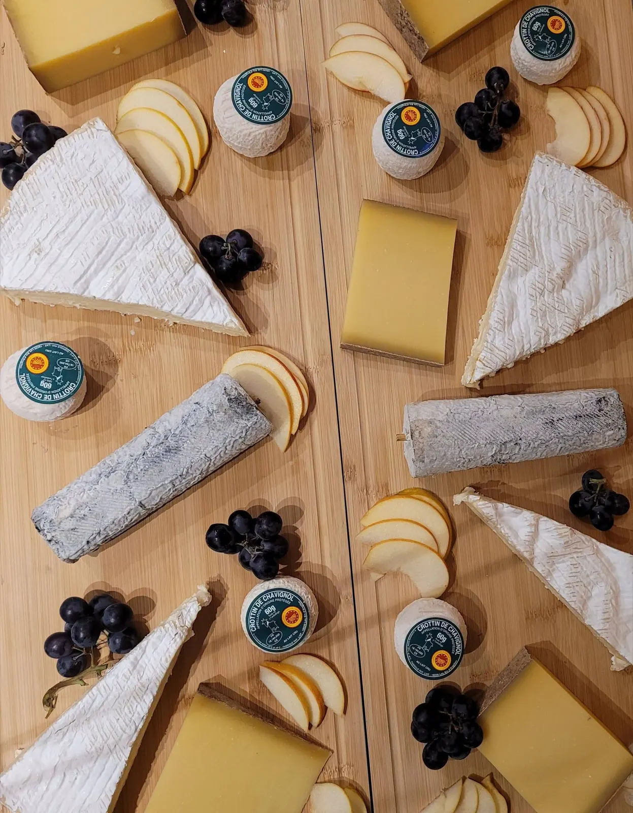

Tartes salées et sucrées, cuisine maison.
Le camion noir de La Tarterie de Tom s'installe sur les marchés, au Parc Floral et sur des sites d'entreprise autour d'Orléans. Au menu : tartes, soupes de saison, plats cuisinés et desserts.
5,0 sur 5 · 91 avis Google
Les lieux de la semaine sur Facebook- OrléansFood truck et traiteur
- Fait maisonTartes, soupes, plats, desserts
- ÉvénementsMariages, anniversaires, entreprises
- 5,0 sur 591 avis Google
Une semaine avec le camion.
Les lieux changent chaque semaine : marchés, Parc Floral, sites d'entreprise. Voici les horaires de la fiche Google.
- LundiFermé
- Mardi9h–15h
- Mercredi9h–20h
- Jeudi8h–20h
- Vendredi11h–20h
- Samedi9h–18h
- Dimanche9h–18h
Pour savoir où se gare le camion aujourd'hui et ce qu'il y a au menu, le plus simple est de regarder la publication de la semaine.
Où est le camion cette semaine ?
Le traiteur de vos événements.
Mariages, anniversaires, repas d'entreprise : La Tarterie de Tom prépare le repas, du brunch au dîner, et peut livrer.
- Brunch de mariage
- Goûter et dîner d'anniversaire de mariage
- Anniversaires
- Déjeuner de CSE, plats au choix dont une proposition végétarienne


